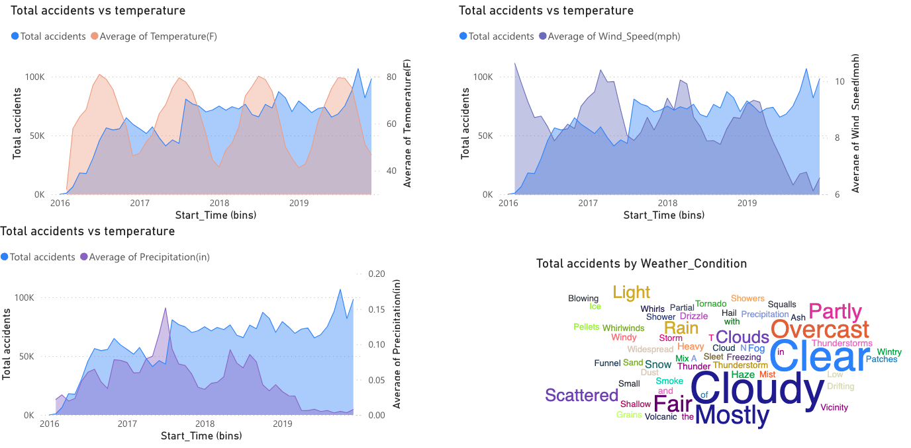
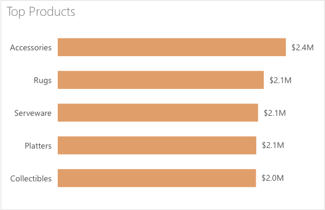
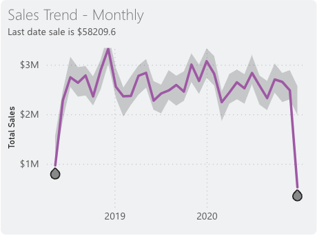
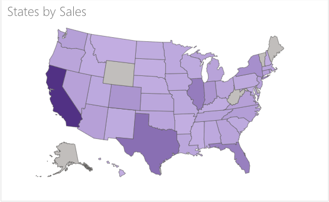
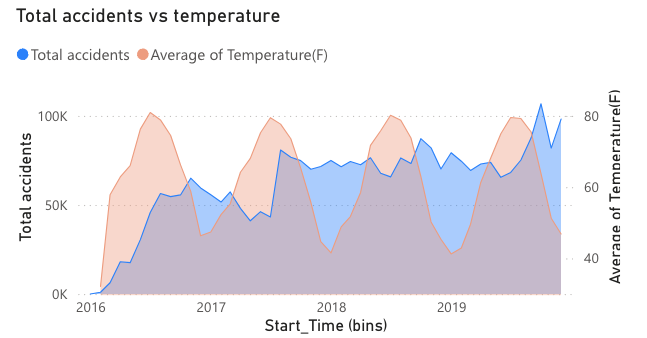
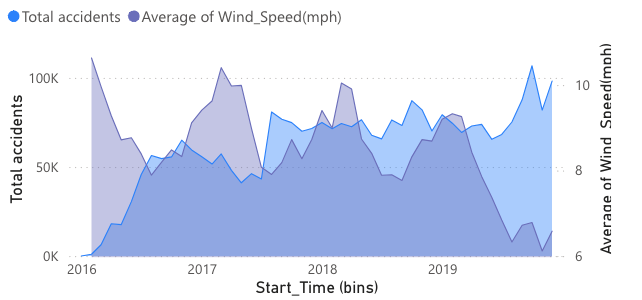
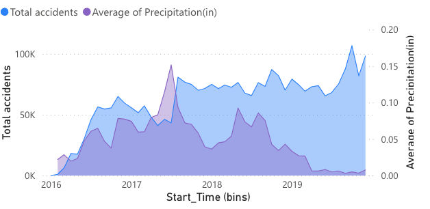
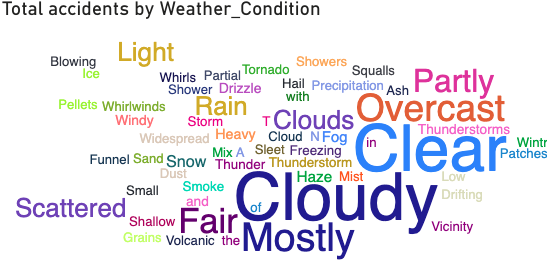
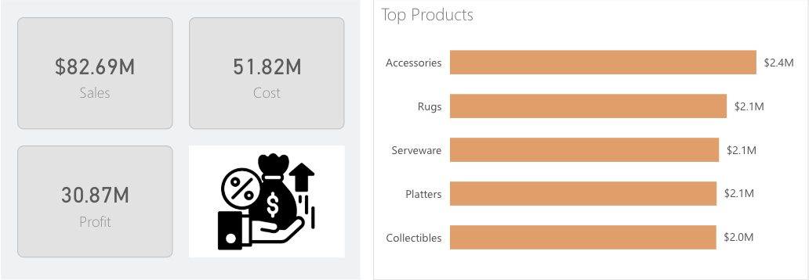
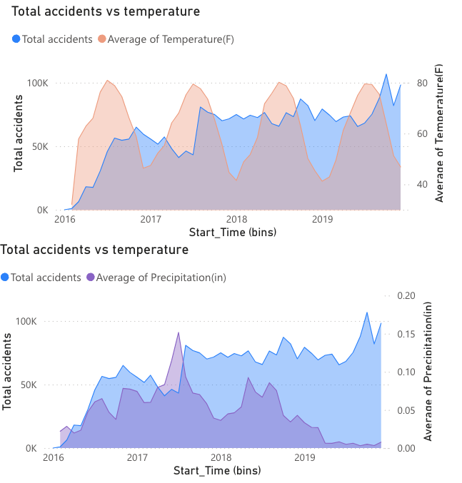

Performance
How much was sold?
CLEAN → CONNECT → MEASURE → EXPLORE → COMMUNICATE
Turning raw data into structured analysis, visual insight and dashboards people can explore.
One project examines business performance. The other explores accident patterns alongside environmental conditions. Both begin with the analytical question.

Revenue, cost, profit, products, monthly trends and state-level sales.

Temperature, wind, precipitation and reported weather conditions.
01 / THE ANALYTICAL WORKFLOW
Understand records, fields and the question.
Missing values, formatting, units, duplicates and types.
Related sources, aligned dimensions and relationships.
KPIs, comparisons and calculated metrics.
Trends, patterns, outliers and segments.
Charts, maps, cards and report filters.
What can the pattern reasonably tell us?
Make the analysis accessible to its audience.
02 / US REGIONAL SALES ANALYTICS
Captured sales view for 2018–2020: headline measures connected to product, time-series and geographic analysis.
03 / THE BUSINESS QUESTION
A higher sales total does not automatically explain profitability or how performance is distributed across products, periods and locations.
I designed the dashboard to bring those questions into one analytical view, connecting headline measures with the dimensions that help explain them.
04 / THE PERFORMANCE SNAPSHOT
Values shown in the supplied dashboard capture. Product, time-series and geographic views give these measures context.
05 / PRODUCT PERFORMANCE
PRODUCT MIX
Accessories leads the displayed product ranking, followed by Rugs, Serveware, Platters and Collectibles.
A ranked view makes an uneven product mix easier to see and helps identify categories that deserve closer review.

Top Products chart from the supplied sales dashboard.
06 / PROFIT + COST
The dashboard connects activity with performance by placing sales, cost and profit in the same view.
The question moves from how much was sold to how much value remained after the associated cost.
07 / SALES THROUGH TIME
MONTHLY SALES TREND
The monthly view makes stronger periods, declines and unusual movements easier to inspect across the selected reporting window.
Sharp changes at the edge of a date range warrant a completeness check before they are interpreted as a sustained change in business performance.

Monthly trend cropped from the sales dashboard.
08 / WHERE PERFORMANCE HAPPENS
STATE-LEVEL SALES
The map provides a visual comparison of stronger and weaker sales areas, adding location to the performance view.
It creates starting points for investigating territory performance, market concentration, regional opportunities and resource allocation.

States by Sales map from the supplied Power BI report.
09 / WHAT THE DASHBOARD CONNECTS
How much was sold?
What remains after cost?
Which categories contribute most?
How does performance change?
Where is revenue concentrated?
10 / US TRAFFIC ACCIDENTS + WEATHER
Comparing accident patterns with temperature, wind speed, precipitation and reported weather conditions.
11 / THE RESEARCH QUESTION
Accident records describe when and where events occurred. Environmental information adds temperature, wind speed, precipitation and reported conditions to the analytical context.
I brought the information together to explore patterns that could support further investigation.
12 / BUILDING THE ANALYTICAL DATASET
Date · time · location · accident information
Temperature · wind · precipitation · condition
The dashboard depends on consistent underlying data before the comparisons become meaningful.
13 / TEMPERATURE
TEMPERATURE / °F
Viewing accident counts alongside average temperature makes it possible to inspect where the series move together or diverge.
The purpose is exploratory: identify periods that deserve closer investigation.

Accident totals and average temperature in the captured time-series view.
14 / WIND
WIND SPEED / MPH
Wind speed adds another lens through which to examine accident frequency across the displayed period.
The comparison makes changing conditions and accident activity easier to inspect than individual records alone.

The legend and right-hand axis identify average wind speed in mph.
15 / PRECIPITATION
PRECIPITATION / INCHES
The precipitation view creates a starting point for reviewing wetter periods and the accident patterns displayed alongside them.
It supports association and exploration; exposure, location and other variables would need consideration in a deeper risk analysis.

The legend and axis identify average precipitation in inches.
16 / WEATHER CONDITIONS AT A GLANCE
CONDITION PROFILE
The word cloud gives an at-a-glance sense of the weather labels represented in the records.
It is an orientation view. Structured counts and comparative charts are needed for precise category comparisons.

Weather-condition word cloud from the original report.
17 / MULTIPLE ENVIRONMENTAL LENSES
How do accident patterns compare with changing temperature?
What patterns appear alongside changing wind speed?
How does accident activity vary across wetter and drier periods?
Which reported conditions are represented in the records?
18 / TWO PROJECTS SIDE BY SIDE
19 / THE COMMON ANALYTICAL FOUNDATION
My approach begins with what the available data can reasonably answer. The dashboard is built on that analytical structure.
20 / MY ROLE
21 / TOOLS + METHODS
Dashboard development and report visualisation
Initial review and preparation
Formatting, consistency and usability
Combining related sources
Examining change over time
State-level sales comparison
Sales, cost, profit and target measures
Environmental variables and accident patterns
22 / VISUAL EVIDENCE

Sales, cost, profit and leading products.
State-level sales distribution.

Accident counts alongside temperature and precipitation.
Weather labels represented in the report.
23 / WHAT THESE PROJECTS SHOW
Together, these projects show my work across data preparation, integration, KPI design, geographic visualisation, time-series comparison and insight communication.
The common aim is to organize available evidence so that someone can understand the problem more clearly and know which questions to investigate next.
REFLECTION
The work before the chart determines the usefulness of the chart: choose relevant variables, check consistency and decide which comparisons are meaningful.
Power BI becomes the communication layer, turning that analytical structure into something another person can explore while keeping the interpretation within what the data supports.
PROJECT SNAPSHOT